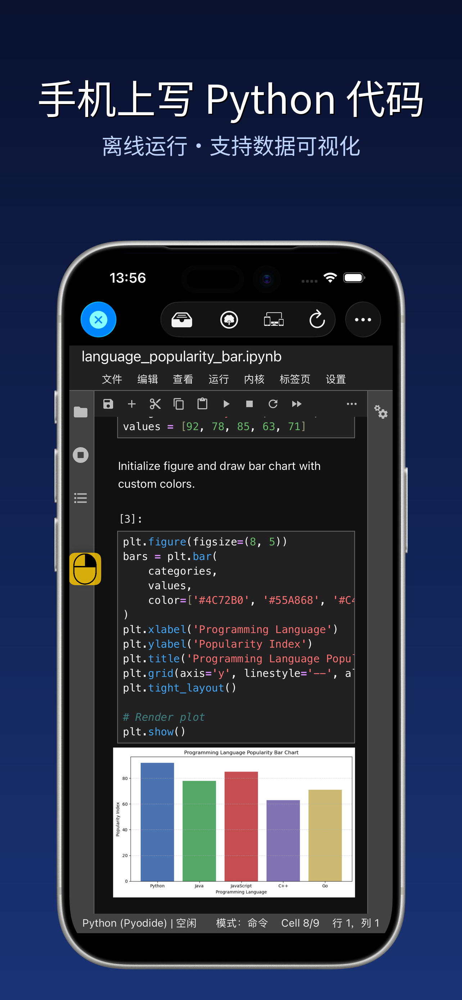
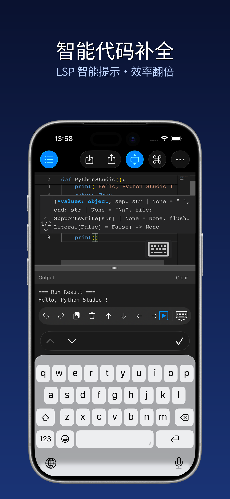
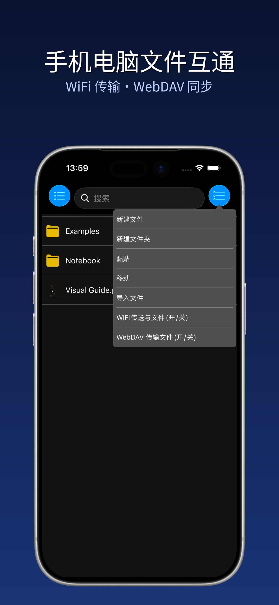
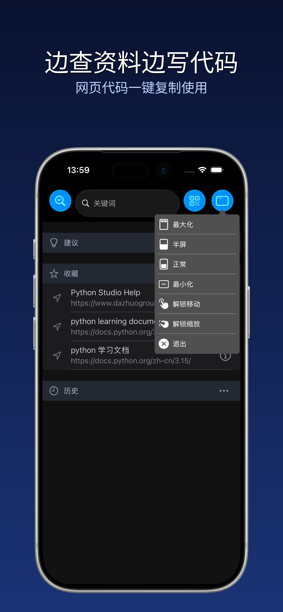
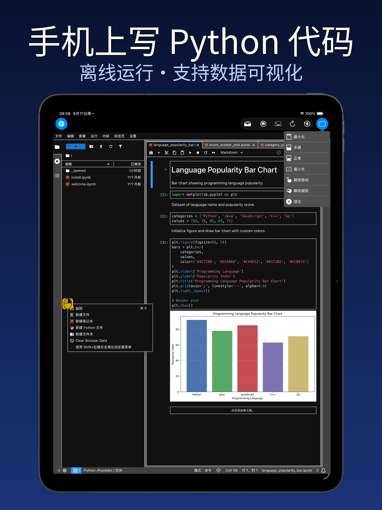
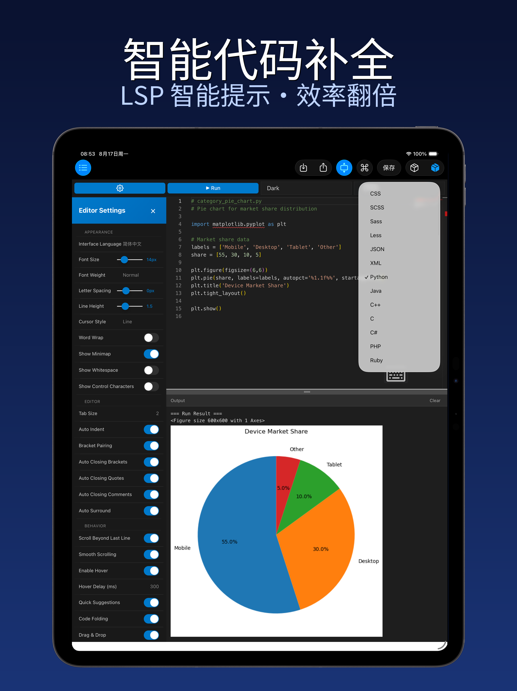
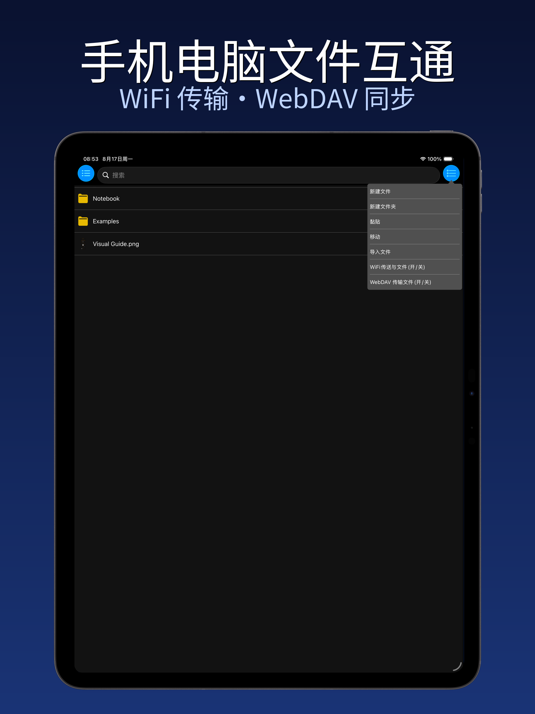
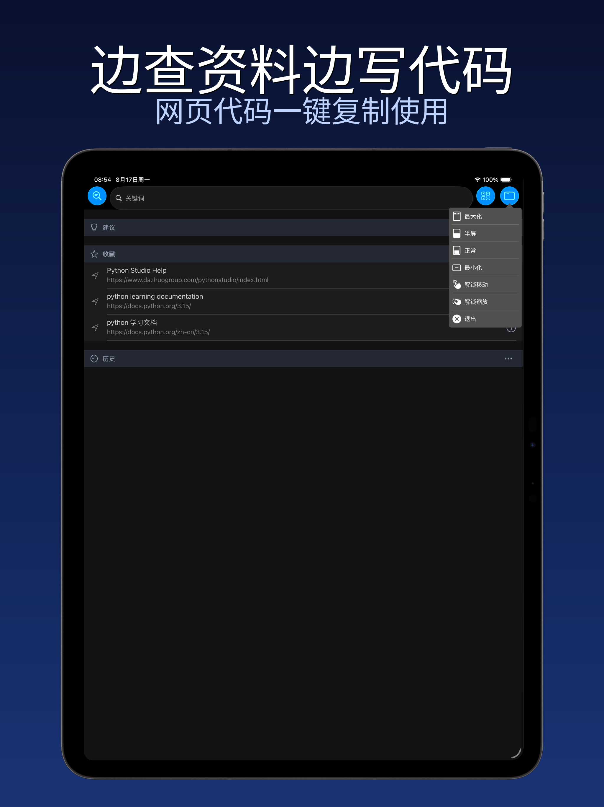

Python Studio - Python Coding
Turn your iPhone / iPad / Mac into a portable Python coding workshop.
Turn your iPhone / iPad / Mac into a portable Python coding workshop.
无需复杂配置，在设备上直接完成 Python 脚本的编写、编辑与运行，代码效果实时呈现。
语法高亮、自动缩进与代码补全，从根源减少语法错误，让编码更专注、更高效。
轻量化文件管理工具，无缝衔接电脑与手机端项目文件，文件管理告别繁琐。
内置浏览器直达编程学习资源，查文档、看教程、写代码同步进行，学习效率翻倍。
支持多窗口同时打开，拖拽调整位置、缩放控制大小，多任务处理游刃有余。
支持打开、编辑、运行 .ipynb 笔记本，无需联网即可运行 Python。
iPhone




iPad



